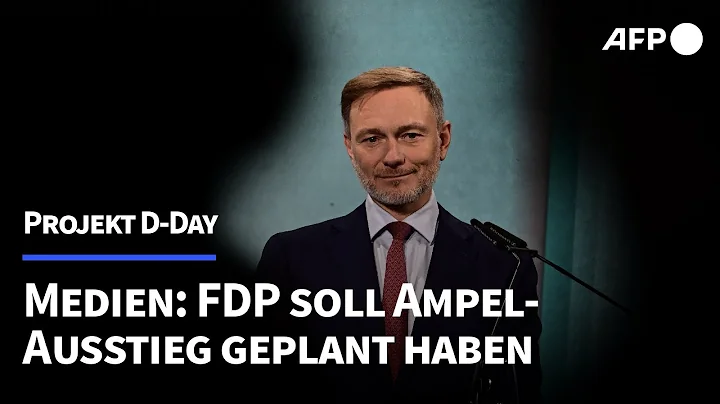

Leeres Geschwätz! Katja Wolf, Georg Maier
und Mario Voigt wollen uns für dumm verkaufen!
4048 Aufrufe · vor 21 Stunden
EU Kingdom of the Blind, Orban can see
21.983 Aufrufe · vor 3 Stunden
MANOVA The Great WeSet: „Die Blackrock-Bourgeoisie“
(Ulrich Gausmann, Horst Müller, Werner Rügemer)
13.311 Aufrufe · vor 10 Stunden
Warum Deutschlands Gesundheitsdigitalisierung hinterherhinkt |
Max Ehret & Prof. Alexander Muacevic
288.670 Aufrufe · vor 6 Jahren
Medienberichte: FDP soll Ampel-Aus wochenlang geplant haben
67.142 Aufrufe · vor 5 Stunden

48:10
Medienberichte: FDP soll
Ampelbruch von langer Hand geplant haben | AFP
34.902 Aufrufe · vor 6 Stunden

14:20
RealLifeLore
7.67 Mio. Abonnenten
Why Planes Don't Fly Over Tibet
6.6 Mio. Aufrufe · vor 1 Jahr

8:22
Tech Vision
841.000 Abonnenten
Inside The World's Biggest Passenger Plane
3.7 Mio. Aufrufe · vor 10 Monaten

3:18:21
ThenX
7.8 Mio. Abonnenten
The SECRET to Super Human STRENGTH
20 Mio. Aufrufe · vor 3 Jahren

27:01
Business Insider
9.74 Mio. Abonnenten
How The World's Largest Cruise Ship Makes 30,000 Meals Every...
14 Mio. Aufrufe · vor 1 Jahr

6:58
Destination Tips
282.000 Abonnenten
Dubai's Crazy Underwater Train and Other Things #Only in Dubai
3 Mio. Aufrufe · vor 1 Jahr

48:10
TED-Ed
20.7 Mio. Abonnenten
What would happen, if you didn't drink water? - Mia Nacamulli
12 Mio. Aufrufe · vor 5 Jahren